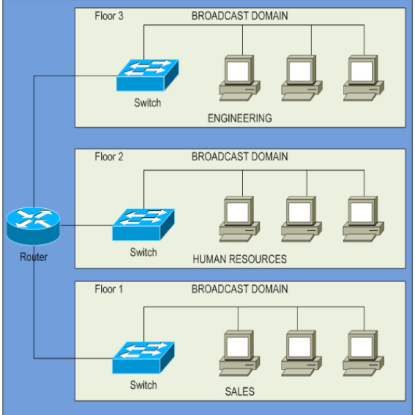

class: center, middle #**PAR - Unidad 8** #**CONFIGURACIÓN DE VLANs:** --- #**¿Qué es una VLAN?** * Una red de área local virtual (VLAN) es un grupo de hosts con un conjunto común de necesidades que se comunican como si estuvieran conectados al mismo dominio de difusión sin importar su ubicación física. * Separa dominios de difusión en la capa 2 mediante el uso de switches (layer 2 switches) en vez de en la capa 3 como solía ser tradicional mediante el uso de routers (layer 3 switches) * Hoy en día se venden layer 2/3 switches * Como evolución: [Software Defined Network (SDN)](http://es.wikipedia.org/wiki/Redes_definidas_por_software) con protocolos como [Openflow](http://es.wikipedia.org/wiki/Openflow) implementado en software o en hardware ([layer 2/3/4 switches](http://h17007.www1.hp.com/cz/en/networking/solutions/technology/sdn/portfolio.aspx#.VvvfkybANC0)) * [Protocolo IEEE 802.1Q](https://en.wikipedia.org/wiki/IEEE_802.1Q) --- #**LAN tradicional** <div style="float: right"></div> * Una LAN tradicional requiere que todos los usuarios con las mismas necesidades y en la misma subred IP (dominio de difusión) estén conectados al mismo equipamiento. --- #**LAN basada en VLAN** <div style="float: right"></div> * Utilizando VLANs, los mismos usuarios pueden estar repartidos por varias ubicaciones geográficas y aún así permanecer en la misma subred IP (dominio de difusión). --- #**¿Cómo funciona una VLAN?** * Las VLANs se identifican con un número (VID), siendo una de ellas la primaria (PVID). - rangos válidos: 1-4094 * En un switch VLAN se asigna el identificador VLAN apropiado a cada puerto. * El switch entonces sólo permite que los datos se envíen entre puertos con la misma VLAN. * Puesto que una red suele estar interconectada por más de un switch, es necesaria una manera de enviar tráfico entre distintos switches. * Una forma de hacerlo es asignar un puerto por cada VLAN en cada switch y tirar tantos cables como VLANs entre ambos switches - cosa ni económica ni práctica --- #**¿Cómo funciona una VLAN? (cont.)** <div style="float: up"></div> * P. ej., si hay 6 hosts en cada switch en 6 vlans diferentes, se necesitaría 6 puertos en cada switch para conectar los switches. Estos implicaría que si se tienen 24 vlans diferentes, tan solo se podrían tener 24 hosts en un switch de 48 puertos * En el estándar VLAN (802.1Q) regula el envío de tráfico para todas las vlans con una única conexión entre dos switches: - define un [campo de 2B](http://en.wikipedia.org/wiki/IEEE_802.1Q#Frame_format) tras la cabecera Ethernet (tipo = 0x8100) para marcar la VLAN a la que pertenece (etiqueta) - la etiqueta se coloca únicamente (***trunking***) en las tramas VLAN que circulan entre puertos que conectan switches o routers entre sí (***tagged ports***) - las tramas que se envían por un puerto conectado a un nodo terminal de una VLAN (***unttaged port***) no llevan etiqueta. --- #**Ventajas y desventajas** * Ventajas: - los usuarios pueden estar separados geográficamente mientras pertenecen a la misma subred IP (dominio difusión) - limita el tamaño de dominios de difusión y limita la actividad de difusión - proporciona beneficios de seguridad al mantener los hosts separados por VLAN y limitar qué dispositivos pueden comunicarse con estos hosts * Desventajas: - las VLANs funcionan en la capa 2 y esta capa no maneja la redundancia (caminos alternativos y bucles) de manera eficiente. Para evitar bucles se puede usar el *Multiple Spanning Tree Protocol* ([MSTP](https://en.wikipedia.org/wiki/Spanning_Tree_Protocol#Multiple_Spanning_Tree_Protocol_.28MSTP.29)) [*STP per VLAN-basis*] - así que, cuando la red es de misión crítica, es difícil que proporcione convergencia rápida cuando los usuarios utilizan VLANs que se reparten a lo largo de múltiples edificios --- #**Creación de VLANs (802.1Q)** * En un *switch vlan*: - cada **puerto terminal** pertenece a una única VLAN y no etiqueta las tramas, no tiene necesidad. - se crea un puente por cada VLAN. - todos los puertos terminales de una VLAN se añaden al puente correspondiente a dicha VLAN. - para cada **puerto troncal** se crea una interfaz virtual por cada VLAN a la que pertenece: * una interfaz virtual etiqueta las tramas salientes con el VID de su correspondiente VLAN (y desetiqueta las tramas entrantes), p.e., para la VLAN 10: - *vconfig add eth0 10* # crea la interfaz virtual eth0.10, que etiqueta las tramas con VID=10 - *ip link add link eth0 name eth0.10 type vlan id 10* # idem con ip - cada una de las interfaces virtuales de un puerto troncal se añade al puente de la VLAN que le corresponde. * En un *router vlan* (conectado a un switch vlan) tenemos también puertos troncales para enrutar entre ellos (capa de red), que se crean de la misma forma indicada arriba. --- #**Prácticas - Kathará** * 1 *switch* con 2 VLANs: - crea un esquema de la red a partir de la configuración del laboratorio - añade un pc más a cada una de las VLANs en distintos dominios de colisión * 2 *switches* con 2 VLANs: - crea un esquema de la red a partir de la configuración del laboratorio - añade un pc más a cada una de las VLANs en distintos dominios de colisión - cambia un pc de una VLAN a la otra sin detener la red * 1 *router* y 1 *switch* con 3 VLANs: - crea un esquema de la red a partir de la configuración del laboratorio - y más ejercicios en el laboratorio ... --- #**[Creación de VLANs (VLAN filter)](https://developers.redhat.com/blog/2017/09/14/vlan-filter-support-on-bridge)** * **VLAN filter** simplifica la creación de bridges-vlans y acerca la configuración a los switches comerciales: - no hay necesidad de crear multiple VLANs y bridges y las topologías parecen más simples y fáciles de manejar * En un *switch vlan* (**comandos ip/bridge**): - se levantan las interfaces: * *ip link set ethX up* - se crea **un único puente** y se activa **vlan_filtering**: * *ip link add br0 type bridge; ip link set br0 up; ip link set br0 type bridge vlan_filtering 1* - se conectan todos los puertos al puente: * *ip link set ethX master br0* - cada **puerto terminal** se asocia a la vlan correspondiente y se define como **untagged** y **pvid** (vlan por defecto): * *bridge vlan add dev eth0 vid 10 pvid untagged; bridge vlan add dev eth1 vid 20 pvid untagged* - cada **puerto troncal** se asocia a cada vlan a la que pertenece: * *bridge vlan add dev eth2 vid 10; bridge vlan add dev eth2 vid 20*